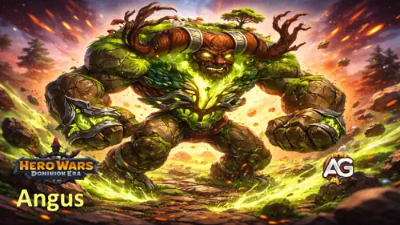
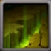
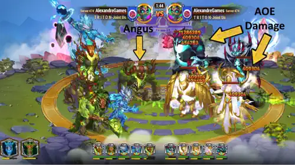
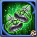
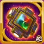

アンガス完全ガイド｜ヒーローウォーズ ドミニオン エラ
- 作成者: Alexandre Domingos. .
大地の圧倒的な力を体感する準備はできていますか？アンガスは、ただダメージを受け止めるだけではない、止められない地属性タイタンです。必殺技大地の怒りによって、大地の猛威を呼び起こし、敵チーム全体を同時に壊滅へ追い込みます。ヒーローウォーズ ドミニオン エラにおいて、アンガスは防御と破壊を兼ね備えた極めて危険な前衛です。
ギルドウォーでもダンジョン攻略でも、アンガスの膨大な体力、強烈な範囲ダメージ、そして地属性シナジーは、地属性編成の中核になります。この完全ガイドでは、スキル、最適なトーテム融合、理想的なチーム構成、そして実戦的な運用ポイントを詳しく解説します。自然の守護者の本当の力を引き出しましょう。

アンガスとは？
アンガスは大地の荒々しい力そのものを体現した存在であり、自然の守護者の力を宿す恐るべき前衛タンクです。最前列に配置され、膨大なダメージを受け止めながら、戦場の敵全員に対して大地を砕くような一撃を与えることを得意としています。

- 役割: タンク
- 属性: 地属性（自然の守護者）
- 配置: 前衛（ポジション5）
- パワー: 222,010
- 攻撃力: 454,783
- 属性攻撃: 709,635
- 体力: 18,839,544
- 属性アーマー: 146,547
アンガス スキルガイド - ヒーローウォーズ ドミニオン エラ
アンガスの能力を理解することは、攻撃面と防御面の両方を最大化するために不可欠です。各スキルの仕組みと実戦での強さを見ていきましょう。

スキル1: 大地の怒り
効果: アンガスはその身を大地に沈め、純粋な地のエネルギーをチャネリングして、すべての敵タイタンへ同時に放出します。発動中、アンガス自身は移動も他の行動もできず、この大地震級の攻撃に全身を捧げます。
仕組み: 発動すると、アンガスは毎秒409,305ダメージを8秒間、敵タイタン全員に同時に与えます。つまり、各敵に対して合計3,274,440ダメージを与える可能性があります。その代償として、アンガス自身は8秒間完全に行動不能となり、移動、回避、通常攻撃ができません。
PvPとダンジョンで重要な理由: 対人戦では、敵チーム全体に1体あたり320万超の総ダメージを与えるこのスキルは極めて凶悪です。さらにダンジョンでは、水属性タイタンが待つ次の部屋まで必殺技を温存し、一気に部屋全体を壊滅させる動きが非常に強力です。優先度: 非常に高い

Alexandre のプロヒント: アンガスの必殺技は大規模な範囲ダメージを与えるため、彼は単なるタンクではなく優秀なダメージディーラーでもあります。ただし8秒間のチャネリング中はアンガス本人が完全に動けなくなるので、使う前に立ち位置を整えることが重要です。ダンジョンでは水属性部屋に入るまで必殺技を温存し、突入直後に発動すると部屋全体を一気に片付けられます。エデンが未チャージでも、アンガスは地属性編成の主力タンクとして機能します。

スキル2: メイントーテム: 大地の精霊のトーテム
なぜ大地の精霊のトーテムがアンガスに必須なのか: 地属性タイタンであるアンガスは、他に少なくとも2体の地属性タイタンと組むことで、自動的に大地の精霊のトーテムと強く噛み合います。このトーテムは単なるステータス上昇ではなく、チーム全体を守りながら攻撃側を罰する能動的な防御機構を作り出します。
トーテム効果:
- 古代山脈の歌: 地属性タイタンが3体以上いると発動。受けるダメージを吸収する結晶バリアを生み出し、吸収した量の2倍を反射します。
- ダメージ吸収: バリアは7,659,015ダメージまで吸収できます。
- 反射ダメージ: 吸収した各攻撃は元のダメージの2倍で攻撃者へ返されます。
- 計算式: (バリア吸収量: 7,659,015 | 反射: 吸収ダメージの2倍)
- 体力上昇: 地属性タイタン全員の体力を+3,995,583増加させ、アンガスと味方の地属性タイタンを大幅に硬くします。
優先度: 非常に高い - アンガスの性能を最大化するうえで必須です。巨大な体力増加、膨大な吸収量、そして強烈な反射ダメージの組み合わせは、地属性タイタンを狙った相手を逆に破滅させる編成を作ります。

アンガスのおすすめスキン - ヒーローウォーズ ドミニオン エラ
スキンはアンガスの性能を大きく変える重要なステータス強化です。戦闘での価値に基づき、どのスキンを優先して育てるべきかを整理します。
デフォルトスキン
体力: +1,022,985
PvP進化優先度: 非常に高い - これはアンガスにとって最優先のスキンです。100万を超える体力は、物理、純粋ダメージ、そして火、水、地、光、闇を含む全属性ダメージのすべてに対して有効です。最前線で全攻撃を受けるタンクであるアンガスにとって、この巨大な体力は生存力、必殺技発動までの時間、そして大地の精霊のトーテムによる反射機会をすべて増やしてくれます。
ダンジョン進化優先度: 非常に高い - ダンジョンでは複数の部屋をまたいで多様な敵に耐える必要があります。巨大な体力増加により、アンガスはどの敵相手でも長期戦を継続できます。全コンテンツを通して最優先です。
チャンピオンスキン
属性アーマー: +49,065
PvP進化優先度: 高い - 重要な制限として、このアーマーは火属性タイタンにしか効果がありません。水、地、光、闇には無効です。しかし火属性はまさに属性三すくみでアンガスを有利に攻撃してくる相手です。つまり、このスキンはアンガス最大の属性弱点を直接補う強化であり、デフォルトスキンの次に育てる価値があります。
ダンジョン進化優先度: 中〜高 - ダンジョンの火属性ウェーブに対して特に価値があります。とはいえ、さまざまな属性の敵と戦うため、総合的にはデフォルトスキンの体力増加のほうが信頼できます。まずデフォルトスキン、その後に火属性部屋対策としてこのスキンを強化しましょう。
メカニカルスキン
属性ダメージ: +230,160
PvP進化優先度: 中 - 属性ダメージ増加は、大地の怒りが水属性タイタンへ与えるダメージを伸ばします。地は水に強いため意味のある強化ですが、アンガスの本質的な価値は純火力ではなく、必殺技を打てるだけ長く生き残る点にあります。デフォルトスキンとチャンピオンスキンの後に育てるのが妥当です。
ダンジョン進化優先度: 低い - ダンジョンでは生存力が最重要です。アンガスの役割は複数部屋にわたってダメージを受け止めることなので、このスキンの火力増加は他の2つのスキンほど大きな価値を持ちません。前2種を完全強化した後で投資すれば十分です。
アンガスのアーティファクト進化優先度 - ヒーローウォーズ ドミニオン エラ
アーティファクトはアンガスの価値を劇的に変えます。何を先に強化するかで、脆いタンクになるか、地属性編成を支える不沈の前衛になるかが決まります。

アンドヴァリの拳（武器アーティファクト）
属性ダメージ: +479,475
攻撃やスキルが水属性タイタンへ与えるダメージを増加させます。相手タイタンのレベルが上回る場合は効果が低下します。
PvP進化優先度: 中 - 大地の怒りの水属性へのダメージは確かに増えますが、アンガスの価値は火力最大化よりも、生存して複数回必殺技を使う点にあります。対水属性では便利ですが、防御系アーティファクトのほうが最終的な総ダメージ期待値を高めます。強化は3番手です。
ダンジョン進化優先度: 低い - ダンジョンでは、各部屋ごとのわずかな火力増よりも、複数のウェーブをまたいで生き残ることのほうが遥かに重要です。防御の印章と大地の王冠を最大化した後で十分です。

大地の王冠（防御アーティファクト）
属性アーマー: +97,482
防衛チームに配置されたタイタンを火属性タイタンの攻撃から守ります。相手タイタンのレベルが高い場合は効果が低下します。
PvP進化優先度: 高い - このアーマーは火属性にしか効かないという制限がありますが、火属性はアンガス最大の弱点です。火属性編成こそがアンガスを最も崩しやすいので、ここを直接補強できるのは非常に大きいです。防御の印章ほど万能ではないものの、対火属性では極めて重要です。2番目に強化しましょう。
ダンジョン進化優先度: 中〜高 - 火属性ウェーブでは非常に優秀です。ただし、多属性の敵と連戦するダンジョン全体で見れば、普遍的な体力を与える防御の印章の方が優先されます。火属性部屋対策としてその後に強化してください。

防御の印章
体力: +5,593,676 | 物理攻撃: +179,805
タイタンに追加ステータスを付与します。体力上昇は敵属性に関係なく常時有効です。
PvP進化優先度: 非常に高い - これはアンガスの最優先アーティファクトです。約560万もの体力増加は、物理、純粋ダメージ、すべての属性ダメージに対して有効です。最前線ですべての攻撃を受けるアンガスにとって、この普遍的な生存力上昇は絶対に外せません。長く生きるほど大地の怒りを複数回撃てるようになり、チームへの貢献が跳ね上がります。物理攻撃ボーナスで通常攻撃も強化されます。最初に育成すべきです。
ダンジョン進化優先度: 非常に高い - 約560万の追加体力は、アンガスがあらゆる敵タイプに対して複数部屋を生き抜くための基盤になります。地属性ダンジョン編成の信頼できる軸として、このアーティファクトは最優先です。
Alexandre のアーティファクト優先まとめ:
- 1位: 防御の印章 - 巨大な体力増加で全敵に対する生存力を底上げし、必殺技回数も増やす
- 2位: 大地の王冠 - 火属性タイタン対策としてアンガス最大の弱点を補強する
- 3位: アンドヴァリの拳 - 攻撃面の補強として有用だが、生存力より優先度は下
アンガスに最適な元素トーテム融合
アンガスの耐久力と火力をさらに引き上げたいなら、トーテム融合が鍵になります。大地の精霊のトーテムと組み合わせることで、PvPの流れそのものを変える凶悪なコンボを形成できます。
アンガスにおけるトーテム融合の仕組み
トーテム融合では、元素スキルまたは原初スキルを選び、カタリストを投入して効果を狙います。投入量が多いほど、高レベルスキルを得る可能性が高まります。
重要ポイント: すでに持っているスキルを再度融合すると、より上位版を引く確率が上がります。同じスキルが複数トーテムにある場合、発動するのはより高レベルのものだけです。元素スキルはクールダウンなしで全体発動し、原初スキルはタイタンごとに条件付きの個別クールダウンを持ちます。
プロの使い方: 融合結果がアンガスの運用に合わない場合は拒否して元の状態へ戻せるため、失敗を恐れず試せます。
🥇 1位: 岩壁のささやき

岩壁のささやき（ランクI）
効果: 味方全員を守る岩のバリアを生成し、450,625ダメージを吸収、さらに受けたダメージの2倍を反射します。
なぜアンガスに最適なのか: アンガスはすでに大地の精霊のトーテムの「古代山脈の歌」により巨大な防御バリアを得ています。岩壁のささやきはこの反射型防御戦略をさらに強化します。敵はまず大地のバリアを割り、反射ダメージを受け、その後にこちらの岩バリアへ攻撃してさらに反射されます。結果として、攻撃側が自ら崩れていきます。
PvPでの価値: バーストダメージ型の相手に特に有効です。敵が大技を使うたびに二重の反射が発生し、大きな自滅ダメージを受けます。アンガスの膨大な体力と組み合わさることで、チーム全体が攻撃したくない要塞になります。 優先度: 非常に高い
🥈 2位: 氷河期

氷河期（ランクI）
効果: 相手のベーストーテムが発動すると、敵タイタン全員を1秒間凍結させ、15.8%の被ダメージ増加デバフを5秒間付与します。
なぜアンガスを強化するのか: アンガスの大地の怒りはもともと敵全員へ同時に大ダメージを与えます。氷河期によって敵が凍結し、さらに脆弱化した状態でアンガスのチャネリング必殺技を受けると、既に高いダメージがさらに増幅されます。加えて、凍結によって敵が逃げにくくなり、8秒間の総ダメージを最大化できます。
PvPでの価値: アンガスの必殺技をさらに危険なものへ変えます。凍結中かつ脆弱化した敵に大地の怒りを当てることで総ダメージが大きく伸び、敵の反撃タイミングも遅らせられます。 優先度: 高い
🥉 3位: 最後の閃光

最後の閃光（ランクI）
効果: タイタンの体力が危険域に入ると、一時的な無敵状態を得て、瞬間火力による即死を防ぎます。
なぜアンガスを守るのか: アンガスは非常に頑丈ですが、最前線で集中砲火を受けます。特に火属性編成の圧力にさらされる場面では、この融合が最後の保険になります。膨大な体力が削られて危険域に入った瞬間、反撃や立て直しのための数秒を確保できます。
PvPでの価値: 火属性中心の対地属性メタに対して特に有効です。アンガスが必殺技を撃つ前に落ちるか、ぎりぎり生き残って試合を返すかの差を生みます。 優先度: 中〜高
アンガスに最適な原初トーテム融合
次は、特定条件で発動し、タイタンごとに個別クールダウンを持つ原初融合を見ていきます。最前線タンクであるアンガスには、長期戦での耐久と圧力を高める効果が特に重要です。
🥇 1位: 古代の鼓動

古代の鼓動（ランクI）
効果: 味方タイタンがスキルを使うたびに、112,000体力回復します。発動は21秒に1回までです。
なぜアンガスに最高なのか: 最前線で攻撃を受け続けるアンガスには、あらゆる回復手段が価値を持ちます。古代の鼓動は味方全員のアクションに反応してアンガスを継続的に回復するため、5体編成ではほぼ最大効率で回り続けます。専属ヒーラーがついているようなものです。
PvPでの価値: もともと巨大な体力を持つアンガスに、21秒ごとに112,000の回復が入ることで、継続ダメージで倒すのが非常に難しくなります。長期戦では合計50万以上の追加体力相当になり、相手の必殺技1回分を耐え抜く余裕を生むこともあります。 優先度: 非常に高い
🥈 2位: 元素の呼び声

元素の呼び声（ランクI）
効果: 失った体力に応じて攻撃力が上昇します。体力が低いほど攻撃力が高くなる、逆転向けの強力なメカニクスです。
なぜアンガスに強いのか: 最前線タンクであるアンガスは、戦闘中に常にダメージを受けて体力が減っていきます。この融合はその不利を火力へ変えます。大きく削られた場面ほど攻撃力が跳ね上がり、大地の怒りをさらに危険なものに変えます。
PvPでの価値: 相手にとっては厄介な二択になります。アンガスを集中攻撃すればするほど火力が上がり、無視すれば万全の状態で大地の怒りを通されます。古代の鼓動の回復と組み合わさることで、攻撃上昇サイクルが何度も回ります。 優先度: 高い
🥉 3位: 三重循環

三重循環（ランクI）
効果: 反応型サイクルを作ります。アンガスがシールドを得ると毎秒50,400HP回復、回復を受けると攻撃力+5,600、バフを受けると耐久24,500のシールドを得ます。各効果は2秒間持続します。
なぜアンガスに汎用的なのか: アンガスは大地の精霊のトーテムから体力上昇バフを受けるため、それがシールドに変換されます。シールドは回復を呼び、回復は攻撃力上昇を呼び、全体が自己強化ループとして回り続けます。生存力と火力の両方を同時に底上げできる便利な融合です。
PvPでの価値: 短期決戦のPvPで特に役立ちます。シールド、回復、攻撃上昇が序盤から循環し、アンガスを最初の瞬間から脅威にします。数値の大きさでは古代の鼓動に劣るものの、即効性の高さが魅力です。 優先度: 中〜高
アンガスのカウンター - 彼を支配するタイタンたち
どんなタイタンにも弱点はあります。アンガスのカウンターを理解することは、彼を使う側にも対策する側にも重要です。アンガスは地属性タイタンであり、ヒーローウォーズ ドミニオン エラの属性三すくみによって火属性タイタンに根本的に不利を背負っています。
なぜ火属性タイタンがアンガスをカウンターするのか
属性関係は三すくみで成り立っています。地は水に強く、水は火に強く、火は地に強い。つまり火属性タイタンはアンガスに対して大きなダメージ補正を得ており、逆にアンガス側の攻撃は通りづらくなります。巨大な体力と防御能力を持つアンガスでさえ、火属性の相手には苦戦しやすくなります。なお、光と闇は互いに対立し、地には中立です。
🔥 主な火属性カウンター

アラジ（火属性タイタン）
なぜアラジがカウンターなのか: アラジの火属性攻撃は、アンガスの地属性に対して常に有利補正が乗ります。彼の強力なバーストダメージは、岩壁のささやきと大地の精霊のトーテムの二重バリアを力ずくで割りにきます。属性補正込みの爆発力により、数字以上の圧力をアンガスへ与えます。
対処法: 大地の精霊のトーテムの反射でアラジのバーストを逆利用しましょう。フルバーストをバリアに打たせて反射させれば、アンガスが大地の怒りを安全に通すための隙が生まれます。この対面では大地の王冠が非常に重要です。

アシェロナとパイロ（火属性タイタン）
なぜアシェロナとパイロがカウンターなのか: アシェロナの火属性攻撃は地属性タイタンに増幅ダメージを与え、パイロの支援によって継続的な火力圧力が形成されます。複数ソースからの有利属性ダメージが重なるため、大地の精霊のトーテムのバリアや古代の鼓動の回復があっても、アンガスは長期的に押し切られやすくなります。
対処法: 早めに大地の怒りを使い、アシェロナとパイロを含む火属性部隊全体へ範囲圧力をかけましょう。こちらが押し返す時間を稼げます。可能ならトーテムの反射を使い、相手のバーストを自傷に変える位置取りを意識してください。

イグニス（火属性タイタン）
なぜイグニスがカウンターなのか: イグニスは戦闘全体を通して安定した属性有利を維持します。瞬間火力型ではない代わりに、継続ダメージでアンガスの体力をじわじわ削り続け、属性不利を積み上げていきます。
対処法: イグニス戦ではアンガスの生存力を最大限まで伸ばすことが重要です。チャンピオンスキンと大地の王冠の強化価値が非常に高くなります。必要ならヴェルドック&フィトのトーテム補助を活かして水属性タイタンを編成し、火属性へ自然に圧力を返す構成も有効です。

モロク（火属性タイタン）
なぜモロクがカウンターなのか: モロクは属性有利に加えてスタンを持つため、アンガスにとって非常に危険です。スタンによって大地の怒りのタイミングを崩し、その隙に火属性チーム全体で有利ダメージを集中させられます。コントロールと属性有利が同時に重なる典型的な危険相手です。
対処法: モロクのスタンが飛んでくる前に大地の怒りを発動できると理想的です。チャネリング中のアンガス自身は動けませんが、先に圧力をかけられれば火属性側の攻めを鈍らせられます。チャネリング中にバリアへ攻撃を集めさせられれば、反射ダメージも非常に有効です。
Alexandre の対策メモ:
- 属性意識: 敵にアラジ、アシェロナとパイロ、イグニス、モロク、バルカンが複数見えたら、大地の王冠とチャンピオンスキンを優先して火属性ダメージを軽減しましょう。
- ダンジョン運用: ダンジョンでは水属性部屋に対して大地の怒りを温存し、属性有利を最大限活用します。火属性部屋では大地の精霊のトーテム反射を主軸に耐えましょう。
- チームシナジー: アンガスをヴェルドック&フィトと組ませると、少ない地属性数でも大地の精霊のトーテムを有効化しやすくなり、水属性タイタンを編成して火属性対策を加えやすくなります。
- 役割を見失わない: 火属性相手でも、アンガスの仕事はダメージを受け止めて時間を作ることです。最低1回は大地の怒りを通すことを目標にしましょう。
アンガスのおすすめチーム - ヒーローウォーズ ドミニオン エラ
アンガスは、地属性シナジーを強化し、火属性への弱さを補い、大地の精霊のトーテムを活かせる仲間と組むことで最大限に輝きます。ここでは、アンガスを止めにくい存在へ変える理想的な編成を紹介します。
| アンガスのおすすめチーム - ヒーローウォーズ ドミニオン エラ | ||||
|---|---|---|---|---|
|
|
|
|
|
|
|
|
岩壁のささやき |
古代の鼓動 |
||
|
|
元素の呼び声 |
三重循環 |
||
編成戦略
アンガス（地属性タンク - 自然の守護者）: 最前線を支える不動の柱です。巨大な体力で敵の攻撃を受けながら、大地の怒りを溜めて一気に敵全体へ壊滅的な範囲ダメージを与えます。大地の精霊のトーテムの結晶バリアと岩壁のささやきが重なることで、二重の防御壁を形成できます。ただし、必殺技の8秒チャネリング中はアンガス自身が完全に動けません。
エデン（地属性スーパータイタン）: 地属性編成の象徴的存在です。アンガス、エデン、ヴェルドック&フィトがそろうことで、大地の精霊のトーテムの条件を満たしやすくなります。エデンの高火力とアンガスの全体攻撃が合わさることで、前後から圧力をかけられます。
ヴェルドック&フィト（地属性サポート - トーテム補助）: アンガス編成の鍵です。地属性の味方が少なくても大地の精霊のトーテムを有効にしやすくするため、残りの枠に別属性タイタンを採用する自由度が生まれます。アンガスの価値を最大化する重要なパーツです。
ノヴァ（サポート - スタン担当）: 強力なスタンで敵の行動を止め、危険なスキル発動を遅らせます。ノヴァの拘束に合わせてアンガスの大地の怒りを通せば、動けない敵へ大きな総ダメージを押し付けられます。
タイダス（サポート - 回復）: 回復と継続支援により、アンガスが長く前線に残るための補助を担います。長期戦や複数部屋のダンジョンで特に有効です。
このチームが機能する理由:
- ヴェルドック&フィトの独自性: 少ない地属性人数でも大地の精霊のトーテムを活かしやすくし、編成の柔軟性を高めます。
- 二重バリア構成: 大地の精霊のトーテムの巨大バリアと岩壁のささやきの追加バリアによって、敵は何度も反射ダメージを受けます。
- 全体制圧力: アンガスの大地の怒りは敵全体を同時に削ります。エデンの地属性火力も加わり、相手は非常に受けづらくなります。
- 制御と火力の両立: ノヴァのスタンが、アンガスとエデンのスキルを安全に通す時間を作ります。
- 回復循環: 古代の鼓動の回復とタイダスの支援により、アンガスは前線に残りやすくなり、必殺技回数が増えます。
- ダンジョン適性: 水属性部屋で大地の怒りを温存発動する動きが非常に強く、エデンが未チャージでもアンガスが主軸になれます。
結論: アンガスを極めてヒーローウォーズ ドミニオン エラを制圧しよう
アンガスは、ヒーローウォーズ ドミニオン エラにおいて最も影響力の大きい前衛タイタンの一人です。圧倒的な生存力と全体攻撃の両立により、地属性タイタンの中でも際立った存在になっています。防御の印章による約560万の追加体力と、大地の精霊のトーテムによる反射ダメージが合わされば、敵はアンガスを攻撃するだけで損をする状況に追い込まれます。
育成ではまずデフォルトスキンで普遍的な体力を確保し、その後に防御の印章を強化して生存力を伸ばしましょう。ヴェルドック&フィトと組ませることで大地の精霊のトーテムを柔軟に活かせます。ダンジョンでは、水属性部屋に合わせて大地の怒りを温存する運用を習得すれば、1回の発動で部屋全体を壊せる場面も多くなります。ギルドウォーでもダンジョンでも、アンガスは本格的な地属性編成の土台となる存在です。
注目ガイドをチェック
 アバロン完全ガイド - ヒーローウォーズ ドミニオン エラ
アバロン完全ガイド - ヒーローウォーズ ドミニオン エラ
 マイリ完全ガイド - ヒーローウォーズ ドミニオン エラ
マイリ完全ガイド - ヒーローウォーズ ドミニオン エラ
 タイダス完全ガイド - ヒーローウォーズ ドミニオン エラ
タイダス完全ガイド - ヒーローウォーズ ドミニオン エラ
ご意見をお聞かせください
アンガスのガイドは役に立ちましたか？分かりにくかった点や、修正してほしい点があればぜひ教えてください。Alexandre Games ブログのコメント欄で、ご意見、ご質問、ご提案をお待ちしています。
下のボタンをクリックしてコメントを始めましょう。